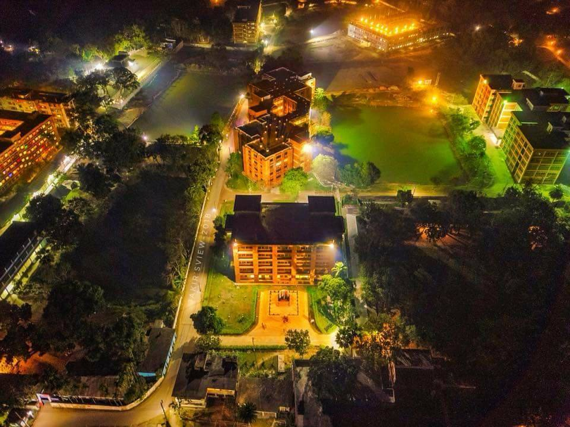
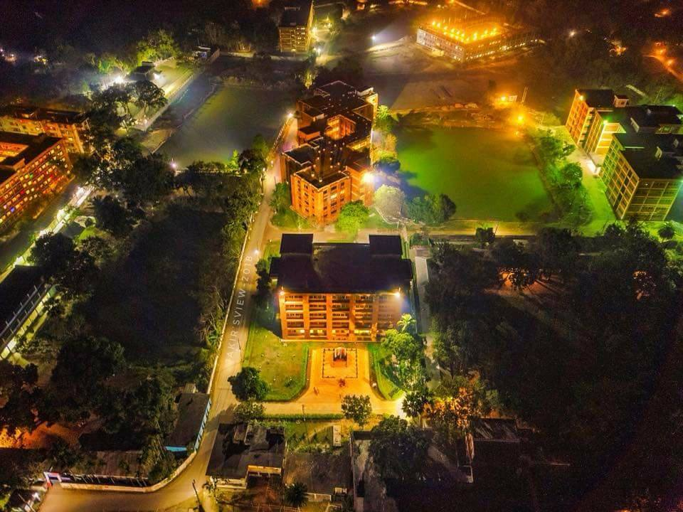

Important Announcements
Notice**: For preparing the final manuscript in camera-ready submission, the maximum page limit set by the springer is 10.
Important Dates
Camera Ready Submission: 12 October 2022 Registration Period: 01 Oct 2020 ~ 12 Oct 2022 Expected Publication Date: 16 December 2022
Submit Camera Ready SubmissionPayment Information
For wire transfer:Account Name: TCCE-2020
Current Account No: 0200015875449
Bank Routing No: 010262267
Agrani Bank Limited
Mawlana Bhashani Science and Technology University Branch
Santosh, Tangail-1902, Bangladesh
Registration Fees
| # | Author Types | Amounts |
|---|---|---|
| 1 | Professional(International) | 100 USD |
| 2 | Student(International) | 75 USD |
| 3 | Professional(Local) | 3000 BDT |
| 4 | Student(Local) | 2500 BDT |
| 5 | Participants(Co-author) | 1500 BDT |
Note**: Participants will get Certificate of Participation and a Conference kit
Click Here for RegistrationAwards & Grants
Best Paper Award: 10000 BDT
1st Runner-Up: 7000 BDT
2nd Runner-Up: 5000 BDT
Grants:
Student Registration grant will be given based on the quality of the paper, reviewer comments, necessity, and available fund
Important Notice:Students who are asking for a waiver of registration, will get the decision of the Organizing Committee by 09 October 2020. After the decision on student registration waiver, Students must complete registration by 12 October
Apply for GrantTCCE 2022
About TCCE 2022
TCCE focuses on experimental, theoretical and application aspects of innovations in Computational and Cognitive Engineering. The Conference aims to provide an opportunity to gather the researchers, scholars and experts from academia and industry working in the following areas of basic and applied sciences, engineering and technology to share their research findings. The last event of TCCE was held in the School of Engineering & Technology (SoET) and Department of Mathematics under School of Physical and Mathematical Sciences (SoPM) of Central University of Haryana (CUH), Mahendergarh, India during November 28-30, 2019.
- Adaptive Systems
- Fuzzy Logic
- Data Mining
- Shallow Machine Learning
- Deep Learning
- Bayesian Learning
- Hybrid intelligence System
- Inductive Learning
- Intelligent and Knowledge Based System
- Intrusion Detection
- Agents and Multi-agent Systems
- Natural Language Processing
- Hybrid and Nonlinear system
- Intelligent Control
- Context-aware Pervasive Systems
- Quantum Computing
- Robotics
- Cognitive Psychology
- Neuroscience
Track 1: Artificial Intelligence and Soft Computing
Track 2: Cognitive Science and Computational Biology
- Bio-informatics
- Brain-informatics
- Health-Informatics
- Computational Biology
- Ecosystem & Infrastructure
- Internet of Services
- Sensor based technology
- Predictive Analytics
- Cyber-physical Systems
- Data mining and Information Retrieval
- Robotic and Automation
- Mobile Computing
- Cluster Computing
- Cloud Computing for Industry 4.0
- Big Data Analytics
- IoT for Smart Applications
Track 3: IoT and Data Analytics
- Cross-layer Optimization and Control
- Cyber-physical Systems
- Delay Tolerant Networks
- Quality of Service and Resource Management
- Localization and Location-based Services
- Network Management
- Block Chain
- Cyber Physical System
- Ubiquitous Network
- Computer Vision
- Robotics and Automation
- ML for Computer Vision
- Virtual Reality
- Augmented Reality
- Signal Processing
- cyclic and rhythmic oscillations
- AI based Signal Timing Technology
Track 4: Network and Security
Track 5: Signal Processing, Computer Vision & Rhythm Engineering
Objectives of the Conference
With increasing complex situations being modelled to find reasonable answers, role of computations and cognitive learning is becoming very important. The objective of the conference is to narrow down the gaps by bringing practitioners and scientists together; so as to focus on the recent trends in computational and cognitive engineering. The conference will further help:
- To provide a forum for exchange of ideas and insights by mathematicians, engineers, scientists, and researchers
- To share fresh perspective on problem-solving in current research areas
- To present various computational and cognitive modelling approaches in the areas of health, education, finance, environment, engineering, commerce and industry
- To promote networking opportunities among experts in various disciplines and encourage interdisciplinary research


 
